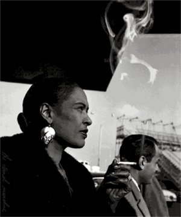

Spirituality & Harmony
In a meeting with my counselor Victoria a few weeks ago, I told her I was writing again and that I felt myself moving past my temporary estrangement from it. When I'm depressed and still able to write, I'm able to confirm my spiritual, subterranean worth. For nine months after Todd's death, however, my inability to write only served to exacerbate my grief.
The sole pleasure I ever knew in church music was that which I observed in my mother as she harmonized in church. While I was scrambling back and forth between octaves, my mother chose freely between the harmony lines, finding to my untrained ear the one most appropriate for the hymn's expressive moment. If I was aware of anything spiritual, it was in what she was doing, in the opportunity the hymn afforded her to exercise her very real skills.
Much more so than my playing, much more so than Todd's, my mother's singing has become for me an emblem of the faith needed to harmonize. My mother sang, in her own way, to what she heard in the larger song, not the one being sung with varying degrees of accuracy in the sanctuary, but the one that we all could potentially sing.
On rare occasion, I've experienced something comparable playing bass on stage. There's a moment, after the song is underway, when something extraordinary can happen. It's the moment when every musician, on guitar, on keyboards, on bass, on drums, can alter his or her part, even conceivably at the same time, and the song still endures, like a delicate engine chugging powerfully between the instruments.
Whatever that engine is, it pulls us towards the inaudible—where so much of our daily listening fails to go—and discovers in us new textures, new vocabularies, new metaphors, new shadings to the grand old feelings.